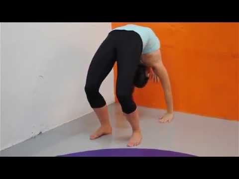

3 exercícios de glúteo para levantar o bumbum - Tua Saúde
- Ginástica Artística | Educa Mais Brasil
- 8 exercícios essenciais para trabalhar os glúteos com a .
- VOLUME II - Secretaria da Educação e do Esporte
- 5 exercícios que ajudam no desempenho sexual - Catraca Livre
- COMO FAZER PONTE? (Descer e Subir) - Tutorial Passo a .
- Ponte sobre o Reformer | Revista Pilates
- 9 exercícios para treino de glúteos em casa - Tua Saúde
- caderno técnico-didático ginástica olímpica
- Foto de Mulher Exercício Homem Treino De Ioga Posição .
- Ponte, pose, pessoas, executar, estúdio, condicão física .

Ative as notificações para não perder as publicações de saúde e bem estar mais interessantes. Clique para ativar Coronavírus Gravidez Emagrecer Gripe e Resfriado Gases Intestinais Mais Gravidez Emagrecer Gripe e Resfriado Gases Intestinais Hemorroidas Menstruação Periodo fértil Candidíase Tosse Perder barriga Saúde do bebê Alergia Massa muscular Prisão de ventre Sono Engordar Todos os Temas Testes e Calculadoras Mais Categorias Tua Saúde › Fitness
3 exercícios de glúteo para levantar o bumbum
Carlos Bruce Personal Trainer Julho 2020 Whatsapp FacebookEstes 3 exercícios para levantar o bumbum podem ser feitos em casa, sendo ótimos para fortalecer os glúteos, combater a celulite e melhorar o contorno corporal.
Estes exercícios para glúteos também são indicados em caso de fraqueza dos músculos desta região, que pode prejudicar o quadril, joelhos e tornozelos devido a compensações estruturais.
Uma boa forma de fortalecer os músculos do bumbum é fazer exercícios, como caminhar na areia fofa, andar de bicicleta e de patins, por exemplo, porque quanto mais esta região for estimulada, melhores serão os resultados.
3 exercícios para fortalecer os glúteos, que podem ser feitos em casa, são:
Exercício 1 - Ponte
Neste exercício deve-se deitar no chão, de barriga para cima, dobrar os joelhos, mantendo os pés afastados e elevar o tronco, fazendo uma ponte, como mostra a imagem. Fazer 3 séries de 8 repetições.
Exercício 2 - Agachamento com avanço
Neste exercício deve-se colocar as mãos na cintura, dar um passo largo à frente e dobrar o joelho que está a frente, como mostra a imagem, tendo o cuidado para não desequilibrar e para não encostar o outro joelho no chão. Fazer 3 séries de 8 repetições com cada perna.
Exercício 3 - 3 apoios
Neste exercício deve-se ficar de 3 apoios no chão e elevar uma perna, como se estivesse dando um chute para cima. Para que o exercício tenha mais efeito, pode-se colocar uma caneleira de 1 kg ou mais.
Outros ótimos exercícios para fazer em casa e levantar os glúteos são subir escadas durante 10 minutos seguidos, subindo 2 degraus de cada vez, ou então subir num banco ou numa cadeira com 20 centímetro de altura, usando apenas uma perna e mantendo as costas eretas. Neste exercício deve-se fazer 3 séries de 8 repetições com cada perna.
Quando o objetivo é somente estético, um preparador físico poderá indicar uma série completa de exercícios que podem ser feito na academia de ginástica.
Veja o que você precisa comer para aumentar os glúteos no vídeo com a nutricionista Tatiana Zanin:
Esta informação foi útil? Sim Não Mais sobre este assunto: O que fazer para aumentar o bumbum mais rápido 3 exercícios para aumentar o glúteo em casa 6 exercícios para definir a barriga Como perder barriga em 1 semana 8 melhores exercícios para perder barriga rápido 6 Exercícios para parte interna da coxa 7 dicas para perder gordura abdominal mais rápido 3 exercícios para afinar a cintura em casa
Informação do autor: Carlos Bruce Personal Trainer Formado pela Universidade Federal do Rio De Janeiro em 2012, com registro profissional no CREF 038849-G/RJ. Vídeos relacionados Lanches para treinar | Antes durante e Depois do Treino 11:27 | 566.767 visualizações Para te ajudar a saber exatamente o que comer antes e depois do treino, para ficar com um corpo maravilhoso, a sua nutricionista Tatiana Zanin, dá exemplos de Inscreva-se 2.3 milhões
Se inscreva na nossa newsletter
Fechar Obrigado porRegistar! O seu email de confirmação
está a caminho
Saúde , Nutrição e Bem-estar em uma linguagem simples e acessível. Informações úteis sobre remédios, doenças, exames e tratamentos da medicina tradicional e alternativa.
Última atualização do site: 26/03/2021
Nós aderimos aos princípios da HONcode Verifique aqui.
Termos de Uso Processo Criativo Contato Privacidade Trabalhe conosco Quem Somos Missão e Valores Bibliografia RSS © 2007 - 2021 Tua Saúde – Todos os direitos reservados. Atenção: O Tua Saúde é um espaço informativo, de divulgação e educação sobre de temas relacionados com saúde, nutrição e bem-estar, não devendo ser utilizado como substituto ao diagnóstico médico ou tratamento sem antes consultar um profissional de saúde. Carregando . . .